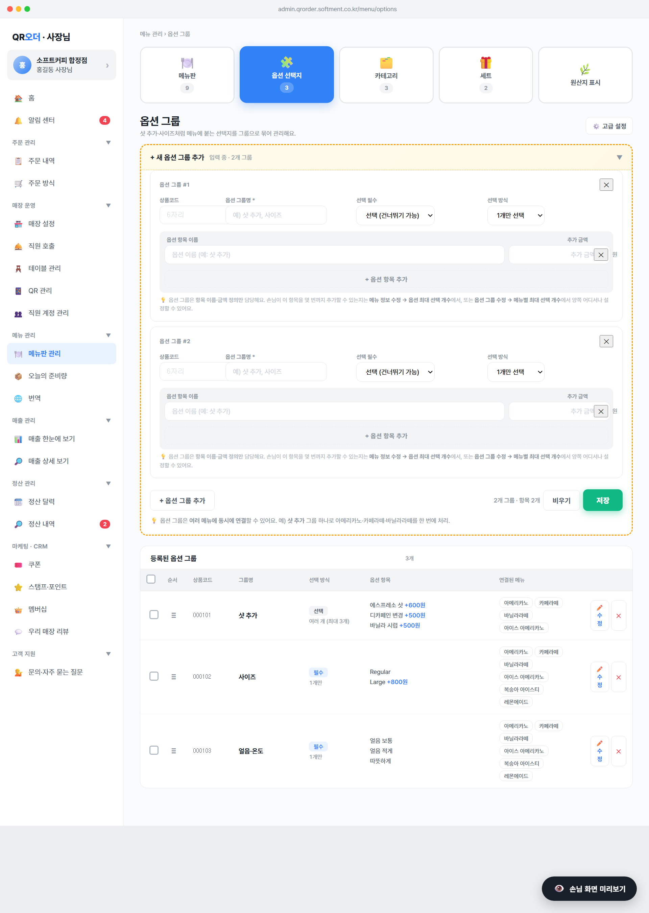

옵션 그룹의 선택 방식을 「1개만 / 여러 개」로 구분하고, 여러 개 모드일 때 그룹 자체의 최대 선택 항목 수를 지정. (예: 「샷 추가」 항목은 최대 3개까지 동시에 고를 수 있게)

1개 선택 / 중복 선택 2종이고, 중복 선택은 몇 개까지 제한할 수 없었음. 손님이 한 그룹에서 무제한으로 항목을 골라 담을 수 있어 가격·재료 통제가 어려움.1개만 / 여러 개로 정리. 여러 개일 때만 최대 N개까지 input이 표시돼서 그룹 단위 한도를 직접 지정.onchange에서 c.mode 갱신maxSelect 자동으로 1로 리셋 + 입력 칸 숨김maxSelect=2로 자동 초기화 (최소값)OPT_GROUPS[id].mode: '1개만' | '여러 개'OPT_GROUPS[id].required: boolean (선택 vs 필수)'1개 선택' · '중복 선택'은 자동 마이그레이션 안 함 — 저장 시 새 값으로 덮어씀1개만 선택, 여러 개 선택선택 (건너뛰기 가능), 필수 (반드시 선택)1개만 / 여러 개 (최대 3개)min=2, max=20Math.max(2, Math.min(20, Number||2)) 자동 보정OPT_GROUPS[id].maxSelect: number (1개만=1, 여러 개=2~20)state.optBulkCards[ci].maxSelectstate._optEdit.maxSelectsaveOptBulk / saveOptEdit — 모드 검증 후 보정값 저장여러 개 (최대 3개)